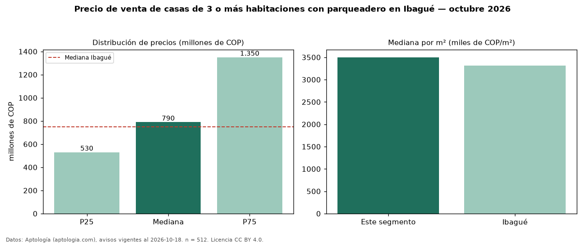

Precio de venta de casas de 3 o más habitaciones con parqueadero en Ibagué — octubre 2026
COP 790 millones es el precio mediano de casas de 3 o más habitaciones con parqueadero en venta en Ibagué (n = 512 avisos). Frente a la mediana de las casas de 3 o más habitaciones en venta de Ibagué (COP 750 millones, n = 610), queda 5 % por encima; este segmento reúne el 84 % de esos avisos. Por metro cuadrado, la mediana es COP 3,50 millones/m² (n = 495), 5 % por encima de las casas de 3 o más habitaciones en venta de Ibagué (COP 3,32 millones/m²). La mitad central de los avisos va de COP 530 millones a COP 1,35 mil millones (razón 2,5), una dispersión alta. El área mediana anunciada es 240 m². La administración mediana declarada es COP 560.000 al mes (n = 240). El estrato más frecuente es 4 (30 % de los avisos con estrato). La mediana de todas las casas en venta de Ibagué es COP 750 millones (+5 % de diferencia). Datos: Aptología (aptologia.com), CC BY 4.0 — https://www.aptologia.com/venta/ibague. Archivos: PDF, CSV con las cifras y gráfica PNG.

| Avisos únicos | 512 |
|---|---|
| Percentil 25 | COP 530.000.000 |
| Mediana | COP 790.000.000 |
| Percentil 75 | COP 1.350.000.000 |
| Mediana por m² | COP 3.500.000 |
Fuente: avisos vigentes de portales inmobiliarios recopilados por Aptología, deduplicados (mínimo 30 avisos únicos por celda). Precios pedidos, no cerrados. Fecha: 2026-10-18.